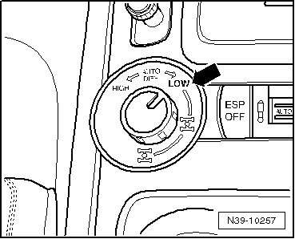
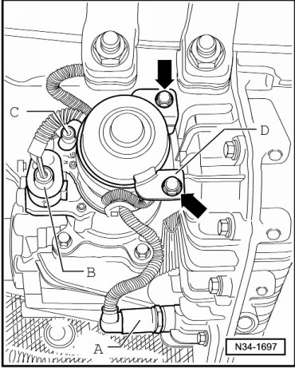
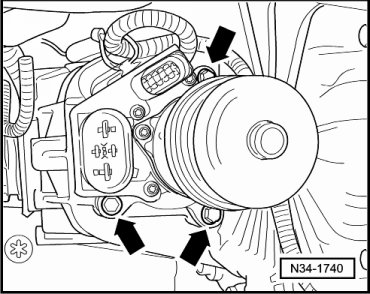
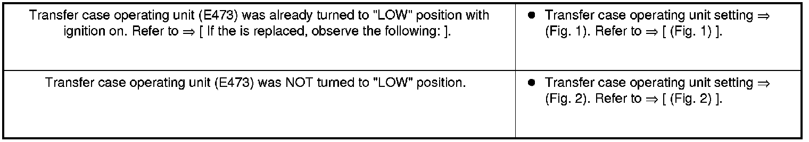
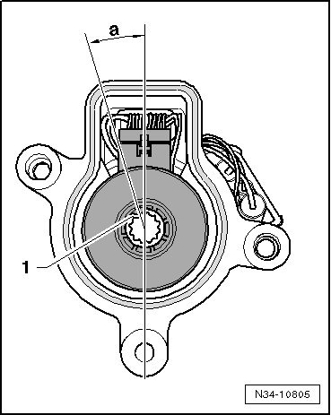
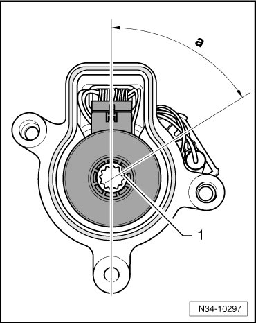
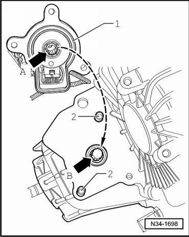
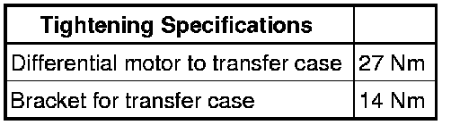

Differential Motor
Differential Motor
Special tools, testers and auxiliary items required
• Torque wrench (VAG 1331)
Removing
If the differential motor (V253) is replaced, observe the following:
The new differential motor is set to a specified position.
- To make installation easier, set this position on the old differential as well, if possible:
- To do this, switch ignition on.

- Rotate transfer case operating unit (E473) to "LOW" position - arrow -.
- Then switch ignition off.
If previous differential motor will be reinstalled, transfer case operating unit (E473) does not need to be set to the "LOW" position.
Continuation for All
- If a shield is fitted over differential motor, remove it.
- Separate connectors - A -, - B - and - C -.

- Remove bracket - D - - arrows -.
- Remove bolts - arrows - and the differential motor from the transfer case.

Installing
If a new differential motor is installed, observe the following:

(Fig.1)
• The transfer case operating unit (E473) is in "LOW" position.

• Shaft with interrupted tooth pattern - 1 - must be in - a - position.
"a = approximately 10 degrees"
- If necessary, set the interrupted tooth pattern - 1 - on the shaft of the differential motor to the position shown in the illustration (e.g. using a screwdriver).
(Fig.2)
• The transfer case operating unit (E473) is NOT in "LOW" position.

• Shaft with interrupted tooth pattern - 1 - must be in - a - position.
"a = approximately 60 degrees"
- If necessary, set the interrupted tooth pattern - 1 - on the shaft of the differential motor to the position shown in the illustration (e.g. using a screwdriver).
Continuation for All
- Make sure that the O-ring - 1 - that seals on transfer case makes contact in base of groove at the differential motor.
- Set differential motor on alignment sleeves - 2 - of transfer case.

- Ensure that the interrupted teeth on differential motor - arrow A - and on selector shaft/transfer case - arrow B - are aligned.
- Insert the bolts - arrows - for the differential motor and tighten.
- Install bracket - D - - arrows -.
- Connect the connectors - A -, - B - and - C -.
- If a shield was fitted over differential motor, install it.
- Check gear oil level in transfer case. Refer to --> [ Transfer Case Gear Oil Level, Checking ] Service and Repair.
